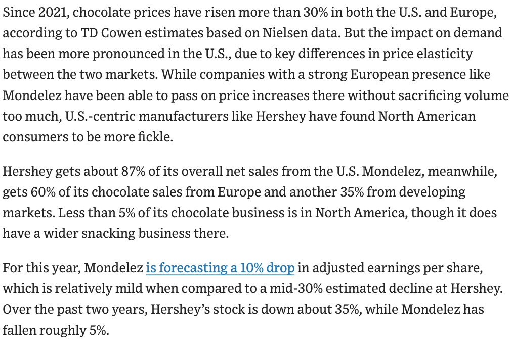

RSC Economics Experience · July 2026
Class 2
Elasticity of Demand and Costs
Meng Hsuan “Rex” Hsieh
Press → to begin
Agenda for Today
Elasticity of Demand and Costs
- Finishing the supply/demand model (simultaneous shifts)
- Elasticity of demand and economic behavior
- Firms’ costs and the sunk-cost fallacy
Supply and Demand
More on Supply & Demand
Press ↓ to continue
Recap · 1 of 3
Scarcity, Opportunity Cost & the Margin
e.g. coming to class → the opportunity cost is your best forgone use of that hour (sleep, a shift at work).
- If MB > MC, doing one more unit still raises net benefit → do more.
- If MB < MC, the last unit lowers net benefit → do less.
- So neither can hold at the optimum — net benefit is maximized only where MB = MC.
Recap · 2 of 3
Demand, Supply & Equilibrium
Recap · 3 of 3
Movements Along vs. Shifts of Curves
e.g. coffee’s price rises → slide up the demand curve, QD falls.
e.g. a frost hits coffee farms → the entire supply curve shifts left.
But be cautious about which market we are analyzing!
Mathematical Formulation
With Algebra Now
Press ↓ to view algebra examples
Algebra in supply & demand
Shocks vs. Movements
In economic analysis, it is critical to distinguish between these effects:
- Market equilibrium changes only if a shock occurs that shifts the demand or supply curve.
- Demand or supply curve shifts occur if variables we were holding constant (tastes, income, government policies, costs of production) change.
- Movement along the demand or supply curve is a result of only price changes.
Algebra in supply & demand · 3
Excess Supply and Excess Demand
Algebra · Solution 3-5
Solution: Excess Supply & Demand
- Excess demand → buyers bid price up → QD falls, QS rises until P*
- Excess supply → sellers lower price → QD rises, QS falls until P*
Algebra · Solution 3-5
Excess Demand & Supply, Step by Step
Press → to add each element — axes are zoomed in (Q starts at 8) so the three prices are visible
Algebra in supply & demand
The Market Revision Process
We will assume markets are in equilibria unless otherwise specified.
Group Work · Supply & Demand Algebra
🎲 Group Work: Finding Equilibrium
Group Work · Answers
Answers: Finding Equilibrium
Equilibrium: P* = $4, Q* = 12
Not in equilibrium: sellers cannot sell all they want, so they lower prices — the price falls toward \( P^* = 4 \). Let’s see it graphically ↓
Group Work · Answers
Finding Equilibrium, Step by Step
Press → to add each element of the graph
Group Work · Answers
Finding Equilibrium, Graphically

Supply and Demand Together
Simultaneous Shifts
Press ↓ to view simultaneous shifts
Simultaneous Shifts
Multiple Market Shocks
It is also completely reasonable to be in situations where both supply and demand shift, potentially in different directions.
These simultaneous changes have distinct implications for the market equilibrium quantity and price.
Simultaneous Shifts
Shifts Summary Table
Qualitative predictions of market shocks:
| Demand Shock | Supply Shock | Equilibrium Price (P) | Equilibrium Quantity (Q) |
|---|---|---|---|
| Shifts Out (↑) | Shifts Out (↑) | Ambiguous (↑↓=) | Increases (↑) |
| Shifts In (↓) | Shifts Out (↑) | Decreases (↓) | Ambiguous (↑↓=) |
| Shifts Out (↑) | Shifts In (↓) | Increases (↑) | Ambiguous (↑↓=) |
| Shifts In (↓) | Shifts In (↓) | Ambiguous (↑↓=) | Decreases (↓) |
When demand shifts out but supply shifts in, price clearly rises — but the change in quantity is ambiguous. Let’s visualize this →
Simultaneous Shifts · Ambiguous Quantity (1 of 2)
Demand Out + Supply In: When Demand Dominates
Demand shifts out and supply shifts in. Press → — here the demand shift is the larger one.
Simultaneous Shifts · Ambiguous Quantity (2 of 2)
Demand Out + Supply In: When Supply Dominates
Same shocks as before — but now the supply shift is the larger one, and the quantity flips.
Quantifying Market Behavior
Beyond Directions
With our understanding of supply and demand: we now know that each point on the supply and demand curves describes a particular willingness-to-produce and willingness-to-pay.
We can ask: How can we quantify behavior at various points along the supply and demand curves?
Group Work · Simultaneous Shifts
🎲 Group Work: Shifting Both Curves
Group Work · Answers
Answers: Shifting Both Curves
Compared to the old equilibrium \( (P^* = 4, Q^* = 12) \): quantity rose to 18, while the price happened to stay the same.
- When both curves shift out: \( Q^* \) increases for sure; \( P^* \) is ambiguous (↑↓=).
- Question 1 is exactly the knife-edge case: the shifts offset, so \( P^* \) did not change — consistent with the summary table! Let’s see it graphically ↓
Group Work · Answers
Shifting Both Curves, Step by Step
Press → to add each element of the graph
Group Work · Answers
Shifting Both Curves, Graphically
Measuring Sensitivity
Elasticity
Press ↓ to study elasticity definition
Elasticity
What is Elasticity?
Elasticity is a statement about changes to behavior when price changes.
It measures how responsive consumers or producers are to changes in market conditions.
Elasticity · Definition
(Own-Price) Elasticity of Demand
We define the own-price elasticity of demand \( \varepsilon \) as:
Where \( \frac{\Delta Q}{\Delta P} \) is the derivative (slope) of the demand function.
By definition, \( \varepsilon \) is negative, but we follow tradition and work with the absolute value \( |\varepsilon| \).
Elasticity · Example
Point Elasticity Varies Along the Curve
- Midpoint: \( (Q=5, P=10) \)
- Horizontal intercept: \( (Q=10, P=0) \)
- Vertical intercept: \( (Q=0, P=20) \)

Elasticity · Solution
Solution: Point Elasticity
Elasticity · Midpoint Rule
Elasticity Along a Linear Demand Curve
Elasticity regions on a linear curve:
- Elastic above the midpoint: \( |\varepsilon| > 1 \)
- Unit-elastic at the midpoint: \( |\varepsilon| = 1 \)
- Inelastic below the midpoint: \( |\varepsilon| < 1 \)
Elasticity · Interactive
Try It: Elasticity Along the Demand Curve
Drag the point along the demand curve \( Q = 10 - 0.5P \) and watch the point elasticity \( |\varepsilon| \) update live
Elasticity · Classification
Relatively Elastic vs. Inelastic
Let’s illustrate relatively elastic and inelastic demand on a graph.
Elasticity · Check Yourself
Which Curve Is Relatively Elastic?
Which demand curve — A or B — is relatively elastic?
Elasticity · Slopes
Elastic Demand vs. Inelastic Demand
How curve slopes represent sensitivity:
Small price changes lead to large shifts in consumption. (High responsiveness)
Large price changes cause only tiny adjustments in consumption. (Low responsiveness)
Group Work · Elasticity
🎲 Group Work: Point Elasticity
Group Work · Answers
Answers: Point Elasticity
Unit-elastic — this is exactly the midpoint of the linear demand curve.
Group Work · Answers
Point Elasticity, Step by Step
Press → to add each element of the graph
Group Work · Answers
Point Elasticity, Graphically
Real World Application
Applying our Understanding
Press ↓ to view WSJ Case Study
WSJ Case Study · Part 1
Cocoa Price Shocks & Chocolate Market
The Wall Street Journal recently ran an article covering cocoa supply shocks:



WSJ Case Study · Part 2
Comparing Geographic Responses

WSJ Case Study · Discussion
What the Article Tells Us
- U.S. demand is more elastic. Chocolate is an impulse buy, so a price surge makes Americans cut back a lot — U.S.-heavy Hershey (≈87% of sales) faced a mid-30% profit decline and its stock fell ~35%.
- European demand is more inelastic. Chocolate is a daily staple, so Europeans keep buying as prices climb — Mondelez (60% Europe) passed prices on “without sacrificing volume,” with only a ~10% earnings dip (stock down ~5%).
- Why it matters for firms: facing inelastic demand, a firm can raise price and lose little quantity, so revenue holds up; facing elastic demand, the same price hike can backfire. One cocoa shock, two very different outcomes.
Elasticity · Interactive
Build Your Own Demand Curve
Q = − · P
Type two positive numbers — the intercepts move. Then drag the point along the curve to read the elasticity; the dotted lines mark the midpoint.
Alternative Dimensions
Other Elasticity Measures
Press ↓ to study income & cross-price elasticity
Other elasticity measures
Income & Cross-Price Elasticities
- Negative: then \( X \) is an inferior good.
- Positive: then \( X \) is a normal good.
- Negative: then \( X \) and \( Y \) are complements.
- Positive: then \( X \) and \( Y \) are substitutes.
Other elasticity measures · Examples
Applying Income Elasticity
What is his income elasticity of demand for sparkling water?
Is sparkling water a normal or inferior good for Rex?
Elasticity · Solution
Solution: Income Elasticity
- Income elasticity is positive (0.81 > 0)
- ⇒ Sparkling water is a normal good for Rex
- A 1% increase in income leads to a ~0.81% increase in purchases
Other elasticity measures · Examples
Applying Cross-Price Elasticity
What is the cross-price elasticity of demand of (tickets for) AO?
Are WAF and AO tickets complements or substitutes?
Elasticity · Solution
Solution: Cross-Price Elasticity
- Cross-price elasticity is positive (0.55 > 0)
- ⇒ WAF and AO tickets are substitutes
- When WAF raises prices, consumers switch to AO
Group Work · Other Elasticities
🎲 Group Work: Income & Cross-Price
Compute the income elasticity of demand. Are streaming subscriptions a normal or inferior good for her?
Compute the cross-price elasticity of demand for creamer. Are coffee and creamer complements or substitutes?
Group Work · Answers
Answers: Income & Cross-Price
Positive ⇒ streaming subscriptions are a normal good for her.
Negative ⇒ coffee and creamer are complements.
Part 4
Sunk Costs & Decision-Making
Press ↓ to view case studies
Decision-Making
Thinking on the Margin
What costs matter for a firm’s decision-making process?
Marginal Benefit equals Marginal Cost
Consequently, any cost incurred in the past does not matter!
Decision-Making
Sunk Costs
Sunk costs must be ignored from the point of view of forward-looking decision-making.
Decision-Making · Case Study 1
Headphone Reseller: Sunk Costs
Every pair of headphones purchased requires initial maintenance costing $160/unit per year. This is an unavoidable cost.
Right now, he receives an offer from another reseller, who offers to buy all 1,000 units for $450/unit.
Should he sell all of his stock or not? Explain why.
Decision-Making · Case Study 2
Headphone Reseller: Marginal Cost
Every pair of headphones purchased requires initial maintenance costing $160/unit per year (unavoidable).
He sold all 1,000 headphones. He has got a buyer for another headphone (of the same model).
What is his marginal cost of selling 1 additional unit?
Market Structure · Introduction
Putting It All Together
We have now separate models for:
- Consumer Behavior (Demand, Elasticity)
- Firm's Marginal Revenue
- Firm's Cost Structure
We are ready to combine these to examine supply and demand in a market context.
Group Work · Decision-Making
🎲 Group Work: Thinking on the Margin
Should he attend the fair? Justify using marginal reasoning.
What is his marginal cost of selling one additional headset?
Group Work · Answers
Answers: Thinking on the Margin
- The $2,000 booth fee is sunk — it is gone whether or not he attends, so it must be ignored.
- Marginal benefit ($500) < Marginal cost ($600) ⇒ do not attend.
- Attending “to get his money’s worth” would be the sunk cost fallacy.
Rent is a fixed cost — it does not change with one more unit sold, so it is excluded from marginal cost.
Part 3
Firms and Cost Functions
Press ↓ to study cost structures
Firms and Costs
Understanding Cost Functions
In economics, firms are treated as a “black box” producing goods. Because producing anything requires resources, it involves trade-offs. We capture these trade-offs in terms of cost functions.
Firms and Costs
Fixed vs. Variable Costs
There are two types of production costs that we care about:
Firms and Costs
Total & Marginal Cost
We write the total cost as the sum of fixed and variable costs:
Where \( FC \) is a constant number, and \( VC(Q) \) is a function of quantity.
Firms and Costs
Profit Function with Costs
Combining revenue and cost functions, we get the complete profit function:
Profit maximization involves choosing \( Q \) to maximize this expression.
Firms and Costs
Average Cost Functions
We also look at cost averages taken over quantities to understand unit profitability:
Firms and Costs · Example
Calculation Exercise
- Total Fixed Cost (TFC) & Total Variable Cost (TVC)
- Average Total Cost (ATC), Average Fixed Cost (AFC), & Average Variable Cost (AVC)
- Marginal Cost function (MC)
Costs · Solution
Solution: Cost Functions
Firms and Costs · Curves
Visualizing Cost Curves
Properties of cost curves:
- \( MC \) passes through the minimum points of both \( ATC \) and \( AVC \).
- \( AFC \) drops continuously as quantity increases.
- The gap between \( ATC \) and \( AVC \) shrinks as \( AFC \) decreases.

Group Work · Cost Functions
🎲 Group Work: Cost Functions
Group Work · Answers
Answers: Cost Functions
MC = ATC = 30! \( Q = 5 \) is exactly the minimum of ATC — the MC curve crosses ATC at its lowest point, just as the cost-curve graph showed. Let’s see it graphically ↓
Group Work · Answers
Cost Curves, Step by Step
Press → to add each element of the graph
Group Work · Answers
Cost Curves, Graphically

Recap
Class 2 Summary
We are going to start moving quickly!
Please review coordinates and calculations for equilibrium and elasticities.
Come to office hours later this week w/ any questions or concerns!
For next time
Preparation for Next Class
Next Session Schedule
See you tomorrow (@ 2:45pm sharp)!
Thank you!